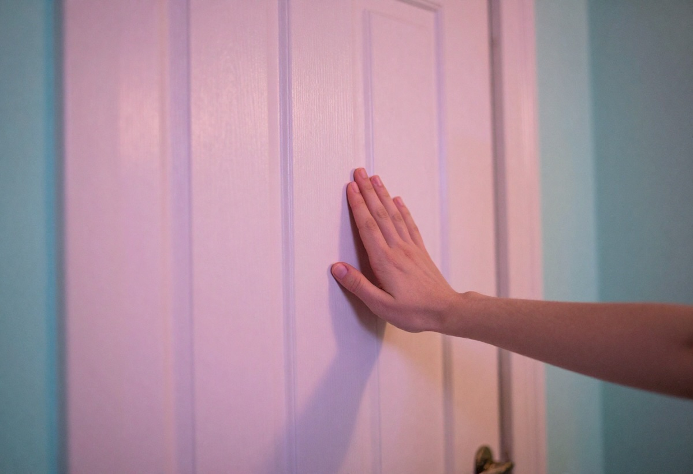

Rüyada Kapının Çalınması: Bir Haber mi Geliyor?
Rüyada kapının çalınması, birçok kişi tarafından merak edilen ve farklı anlamlarla yorumlanan bir rüya sembolüdür. Kapı, yaşamda fırsatları, yeni başlangıçları, değişimleri ve dış dünyayla olan bağlantımızı temsil eder. Bu nedenle kapının çalınması da genellikle bir haber, gelişme, beklenen bir misafir veya hayatınıza girmek üzere olan bir değişimin habercisi olarak değerlendirilir. Ancak rüyanın ayrıntıları, görüldüğü zaman ve rüyayı gören kişinin ruh hali, yorumun değişmesine neden olabilir.
Bu yazıda rüyada kapının çalınmasının ne anlama geldiğini, olumlu ve olumsuz yorumlarını, farklı durumlara göre ne ifade ettiğini ve psikolojik açıdan nasıl değerlendirildiğini ele alıyoruz.
Rüyada Kapının Çalınmasının Genel Anlamı
Rüyada kapının çalınması, en yaygın haliyle haber, yeni bir gelişme veya hayatınıza girmek isteyen bir enerji olarak yorumlanır. Kapı bir sınırdır; çalınması ise bu sınırın dışındaki bir şeyin size yaklaşmakta olduğunu gösterir.
Genel anlamları şunlardır:
- Yakın zamanda alınacak bir haber
- Yeni bir başlangıç veya fırsat
- Beklenmedik bir misafir veya sürpriz gelişme
- Hayatınıza girmek isteyen biri
- Değişim kapıda
- Kişisel sınırların fark edilmesi veya korunması
Bazı yorumculara göre bu rüya, kişinin hissettiği bir beklenti veya merakın bilinçaltında yansımasıdır.
Rüyanın Ayrıntılarına Göre Yorumlar
- Kapının Şiddetle Çalınması: Eğer rüyada kapı sert bir şekilde çalınıyorsa bu, acil bir haber, hızlı bir gelişme veya kişinin zihninde baskı oluşturan bir meselenin çözülmesi gerektiğine işaret eder. Bazı durumlarda ani bir değişimin yaklaşmasını da gösterebilir.
- Kapının Hafifçe Çalınması: Nazik bir tıklama, olumlu bir haber, küçük bir fırsat veya hayatınıza sakin bir şekilde girecek bir misafir anlamına gelir. Rüyayı gören kişinin ruhsal olarak dingin olduğuna da işaret eder.
- Kapıya Bakınca Kimseyi Görmemek: Rüyada kapı çalındıktan sonra kapıyı açtığınızda kimseyi görmüyorsanız, bu durum boş beklenti, karşılığı olmayan bir umut veya ertelenen haber anlamına gelmektedir. Kimi yorumcular bunu, kişinin içsel arayışının bir sembolü olarak değerlendirir.
- Kapıyı Tanıdık Birinin Çalması: Rüyada kapıyı çalan kişinin tanıdık biri olması, o kişiyle ilgili bir haber ya da ondan gelecek bir gelişme anlamına gelir. Bu yakın bir dost, akraba veya iş arkadaşı olabilir.
- Kapının Yabancı Biri Tarafından Çalınması: Bilinmeyen bir kişi kapıyı çalıyorsa, rüya sürpriz bir gelişme, beklenmedik bir fırsat veya hayatınıza yeni birinin dahil olması şeklinde yorumlanır. Bu yeni bir iş fırsatı, arkadaşlık ya da değişim olabilir.
Rüyada Kapının Çalınmasının Olumlu Yorumları
- Yakın zamanda beklediğiniz haberin gelmesi
- Yeni bir iş, proje veya ilişkiye adım atma
- Sürpriz ve sevindirici bir gelişme
- Destek alacağınız birinin hayatınıza dahil olması
- Yeni kapıların açılması
Birçok kaynakta bu rüya, kişinin hayatında olumlu bir sürece giriş yapacağının işareti olarak değerlendirilir.
Rüyada Kapının Çalınmasının Olumsuz Yorumları
Her rüya gibi bu rüyanın olumsuz yorumları da bulunur. Bunlar:
- Geciken işler veya ertelenen haberler
- Ruhsal olarak tedirginlik hissetme
- Beklenmedik bir yükümlülük veya sorumluluk
- Sınırların ihlali, kişisel alanın daralması
Bu yorumlar, rüyayı gören kişinin mevcut yaşam koşulları ve psikolojisine bağlıdır.
Psikolojik Olarak Rüyada Kapının Çalınması
Psikolojiye göre kapının çalınması rüyası, dış dünyadan gelen uyaranlara karşı duyarlılığı ifade eder. Bu rüyayı gören kişi, bir beklenti içindedir; yeni bir adım atmak, birinden haber almak veya hayatındaki belirsizlikleri netleştirmek istemektedir.
Ayrıca bu rüya:
- Dikkat çekilmek istenmesi
- İçsel bir uyanış
- Kendine kapalı kalmış yönlerin fark edilmesi
- Yeni bir döneme hazırlanma
gibi anlamlar da taşır.
Spiritüel ve Tasavvufi Yorum
Tasavvufi yorumlarda kapı, kısmet, rızık ve Allah tarafından açılan yollar olarak değerlendirilir. Kapının çalınması ise bu yolların yakında açılacağının, kişinin sabırla beklemesi gerektiğinin işareti olarak görülür.
Bazı manevi yorumlarda bu rüya, meleklerin veya hayırlı enerjilerin kişiyi koruduğuna dair sembolik bir mesaj olarak kabul edilir.
Rüya Sizi Ne Konuda Uyarıyor Olabilir?
Rüyada kapının çalınması aşağıdaki konularda bir işaret olabilir:
- Bir fırsatı kaçırmamak
- Gelen habere hazırlıklı olmak
- Yeni bir insan ya da fikir için kalbinizi açmak
- Kapalı kalmış duygularınızı gözden geçirmek
- Hayatınıza dahil olmak isteyen kişilere karşı farkındalık geliştirmek
Sonuç
Rüyada kapının çalınması, genellikle haber, değişim ve yeni başlangıçların işaretidir. Ancak rüyadaki detaylar, çalan kişinin kim olduğu, çalınış şekli ve rüya esnasındaki hisler yorumun yönünü belirler.
Bu rüya, hayatınıza yeni bir şeyin dahil olacağını, zihninizin yeni bir sürece hazırlandığını veya bir beklentinizin karşılık bulacağını sembolik biçimde ifade ediyor olabilir. Hem gerçek hayattaki gündeminizi hem de rüyadaki hislerinizi dikkate alarak kişisel bir anlam çıkarabilirsiniz.